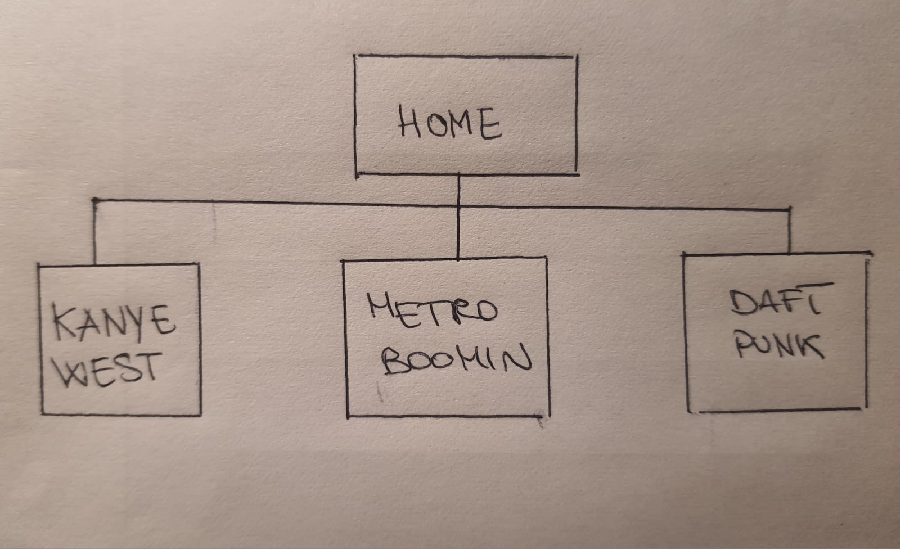
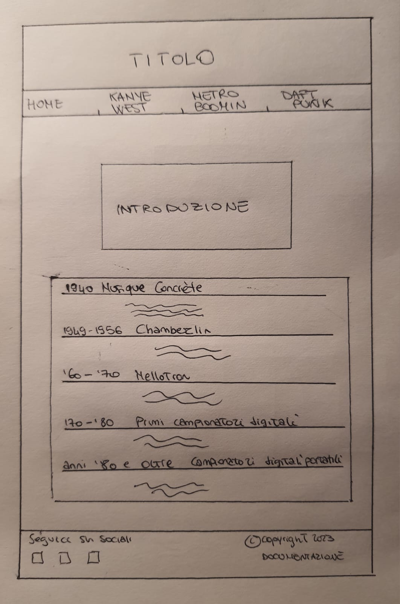
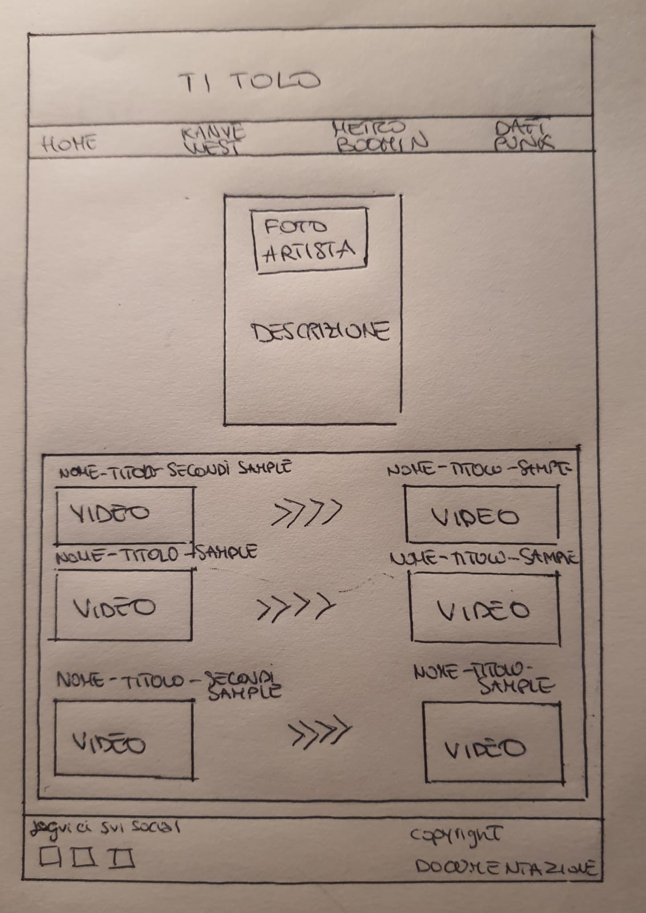
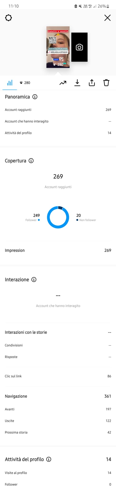

DOCUMENTAZIONE
Abstract
Ho deciso di creare il mio sito sul tema dei sample musicali, per dare un’idea più completa dello sviluppo di questa pratica a chi fosse appassionato di musica e campionamento, evidenziando, attraverso la presentazione di alcuni degli artisti e producer più influenti dei nostri tempi, la presenza di sample nella maggior parte della musica esistente a partire dalla creazione dei campionatori.
Project Management Plan
1. Benchmarking
Obiettivi. Il sito ha intento divulgativo. L’obiettivo principale è informare gli appassionati di musica sull’importanza che il campionamento ha avuto, e ha tutt’oggi, nell’ambito musicale, sulla storia degli artisti e sul nostro modo di ascoltare la musica.
Target. Il target utente non ha limitazioni di nessun tipo, essendo il sampling una sfaccettatura della musica in generale che può interessare tante fasce di persone.
Competitors. I competitors presi in considerazione sono siti che trattano di musica in generale e approfondiscono vari argomenti oppure siti che elencano solamente brani campionati.
Per la storia dei campionatori mi sono affidata a DLSO (https://www.dlso.it/), in particolare ad un articolo intitolato “La storia del sampling in 5 documentari brevi che trovi su YouTube”. Per quanto riguarda i singoli artisti presi in considerazione mi sono basata sulla mia cultura personale e quella di conoscenti fan degli artisti stessi. WhoSampled (https://www.whosampled.com/), invece, è uno dei siti più esaustivi nel fornire informazioni precise sulla presenza di sample in qualsiasi brano esistente.
2. Struttura e layout
2.1 Architettura del sito

2.2 Wireframe per la HOME

Wireframe per KANYE WEST, METRO BOOMIN e DAFT PUNK

2.3 Look and feel
Ho deciso di utilizzare una palette di colori scuri e in particolare ho utilizzato il blu, il rosso e il nero e di proseguire su questa linea per tutto il sito. Il colore dominante è il nero, scelto per far apparire il sito classico, mentre il rosso e il blu, contradditori tra di loro, per suscitare passionalità e serenità d’animo allo stesso tempo, proprio come avviene nella musica. In questo modo, ho voluto dare l'idea di un sito semplice, ma deciso, senza aggiungere grandi banner luminosi, essendo poi un sito divulgativo che non doveva convincere o persuadere, ma solo informare in modo chiaro e coinciso. Infatti, ho inserito diversi box per contenere le informazioni; essendo quasi impossibile trovare immagini di personaggi famosi con licenza Creative Commons, non sono riuscita a trovare una foto di Metro Boomin e ho deciso di inserire una foto di uno studio di produzione. Per il font ho scelto di utilizzare Times New Roman.
3. Linguaggi e strumenti
I linguaggi web utilizzati sono HTML e CSS, mentre ho impiegato: Notepad++ come text editor, Google e Flickr per le immagini (con Licenza Creative Commons), GitHub per la pubblicazione del sito e WhatsApp e Instagram per la promozione.
Communication Strategy
1. Background
Credo che il mio risultato sia efficace perché, nonostante possa essere graficamente più semplice rispetto ad altri siti, racchiude informazioni essenziali che un appassionato o incuriosito di questo tema potrebbe voler conoscere a riguardo, senza che siano eccessivamente tecniche. Ovviamente il sito WhoSampled presenta un database molto, molto più grande di brani, mentre io ho fatto una piccola selezione di canzoni per mostrare agli utenti in che modo viene campionata la musica. Ciononostante, è accessibile a tutti e mostra un quadro generale, ma completo, della storia dei sample e degli artisti che più utilizzano questa pratica.
2. Obiettivi comunicativi
Il sito è ovviamente divulgativo e di intrattenimento. Vuole informare, ampliando le conoscenze musicali riguardo il fenomeno molto frequente del sampling e allo stesso tempo divertire, attraverso il confronto tra i brani samplati e quelli originali.
3. Target audience e messaggio
Il sito ha un target abbastanza ampio e flessibile: persone di tutte le età possono essere appassionate di musica in tutti i suoi aspetti. È un sito facilmente rintracciabile tramite social perché gli appassionati parlano e si confrontano spesso su questi temi sulle piattaforme come Twitter e Reddit.
4. Promozione
Ho promosso il mio sito tramite i miei profili personali su Instagram e WhatsApp.
5. Valutazione dei risultati
Domenica sera ho postato una storia sul mio profilo personale Instagram per promuovre e far conoscere il mio sito, in quanto consente di misurare quante persone cliccano sul link postato. In poche, ho raggiunto 269 account e totalizzato 86 click sul link per visitare il sito.
